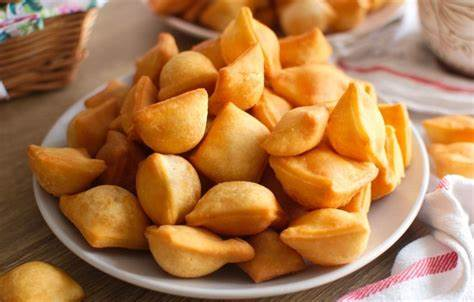

Menu
Mahamri (Coconut & cardamom doughnuts)

Mahamri is a type of doughnut whose special ingredients include Coconut milk and cardamom. This authentic type of snack originated from the Swahili coastal regions of Kenya and Tanzania and is still very popular in both regions.
Normally, it is accompanied by pigeon peas cooked in Coconut milk or a cup of typical Kenyan Chai..
Due to its special exotic taste, Mahamri is considered as one of Kenyan’s Delicacies. For a perfect Sunday Brunch or that special occasion or just for your family and friends, try this simple Recipe!
Ingredients
- 3 cups of whole wheat flour (or mix half white and half wholemeal flour)
- 8 -10 tablespoons of brown sugar (depending on how sweet you wish your Mahamris to be)
- 1 teaspoon of instant yeast
- 1 teaspoon of cardamom
- 1 teaspoon of ghee, butter or margarine
- 1 medium Egg – (optional)
- cup of coconut milk for kneading the dough
- Vegetable oil for deep frying
Cooking Steps
- In a mixing bowl add flour, sugar, yeast and cardamom, ghee/butter/margarine and the egg. Mix the ingredients together with either clean hands or a mixture. Slowly add coconut milk little at a time, as you knead the dough
- If you are using your hands to knead the dough, knead it for a minimum of 15-20 minutes until it’s soft, smooth and not sticky in either your hands or the walls of your bowl
Place the dough in a container and cover it with either a lid or a clean cloth. Let it rest and rise for at least 3-4 hours in room temperature. I normally leave mine overnight! The dough should double in size
- Using a dough cutter or a knife, divide the dough into 4-5 equal balls. Coat each ball of dough with flour, cover them again with a clean cloth for 15 minutes and let them puff/rise
- Sprinkle some flour on a clean surface and using a rolling pin, roll each ball of dough into a circle of about 6 inches. Move with the dough and if needed use more flour to prevent the dough from sticking on the surface and on the rolling pin
- Cut each rolled dough into 4pieces
- Heat up the vegetable oil in a frying pan on a wok
- Test your oil by gently dropping a small piece of dough into the oil. If the dough stays at the bottom for a couple of seconds then rises to the surface then your oil is ready for frying but if it rises up immediately after dropping it into the oil, then your oil is too hot and you need to reduce the heat otherwise your mahamris will burn and end up not been cooked inside
- Fry 4 mahamri at a time (depending on the size of your pan or wok). Use your strainer to splash oil over the top of the mahamris in order to help them puff up. As soon as you see the bottom side of the mahamris has turned light-gold brown turn them over
- Keep turning the mahamris until they have a nice golden brown colour on both sides. Remove them from the hot oil and place them in a serving plate lined with paper towels to absorb any excess oil
- Repeat this process until all the dough pieces have been fried
- Allow them to cool for a few minutes and enjoy!!
- Serve for breakfast with pigeon peas cooked in coconut milk and or with a cup of typical Kenyan Chai ;-)…
Additional cooking tips
If you do not like using coconut milk, normal milk may be used. The taste will be slightly different but they are as equal as delicious!
